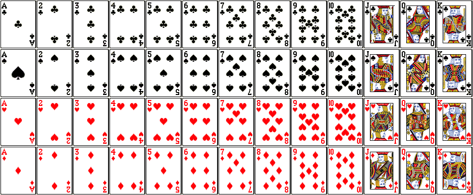

Chapter 7 Appendix A - Theoretical Probability
For those of you who want a more thorough, mathematical description of the basics of theoretical probability, please read on.
##Probability Rules
In theoretical probability, we need to define a few terms and set some rules (known as axioms).
The sample space, \(S\), is the set of all possible outcomes of a random process.
- Example: If you flip two coins (one side Heads and one side Tails), then the sample space contains four possible outcomes: Heads and Heads (HH), Heads and Tails (HT), Tails and Heads (TH), and Tails and Tails (TT), \(S = \{HH,HT,TH,TT\}\).
A subset of outcomes is called an event, \(A\).
- Example: If you flip two coins, an event \(A\) could be that exactly one of the coins land Heads, \(A = \{HT,TH\}\).
For the rules of probability, we can define them with set notation as well as words. If you aren’t familiar with set notation,
- \(\cup\) means union (inclusive OR)
- \(\cap\) means intersection (AND)
- \(A^C\) means complement (NOT)
For events \(A\) and \(B\) and sample space \(S\), the probability of an event \(A\), notated as \(P(A)\), follows the rules below:
- Rule 1: \(0\leq P(A)\leq 1\) (probability has to be between 0 and 1)
- Rule 2: \(P(S) = 1\) (one of the outcomes has to happen)
- Rule 3: \(P(A^c) = P(\text{not }A) = 1 - P(A)\) (if we know the chance of something happening, we also know that chance it doesn’t happen)
- Rule 4: \(P(A\cup B) = P(A\text{ or }B) = P(A) + P(B)\) if \(A\) and \(B\) are disjoint events.
- \(A\) and \(B\) are disjoint/mutually exclusive if \(A\) occuring prevents \(B\) from occurring (they both can’t happen at the same time).
- Rule 4*: \(P(A\text{ or }B) = P(A\cup B) = P(A) + P(B) - P(A\cap B)\)
- Rule 5: \(P(A\cap B) = P(A\text{ and }B) = P(A)\times P(B)\) if \(A\) and \(B\) are independent.
- \(A\) and \(B\) are independent if \(B\) occurring doesn’t change the probability of \(A\) occurring.
- Rule 5*: \(P(A\text{ and }B) = P(A\cap B) = P(A~|~B)P(B) = P(B~|~A)P(A)\).
- The conditional probability of A given that event B occurs, \(P(A~|~B)\), is equal to the probability of the joint event (A and B) divided by the probability of B. \[P(A ~| ~B) = \frac{P(A \text{ and } B)}{P(B)} = \frac{P(A \cap B)}{P(B)}\]
- Intuition: Given that \(B\) happened, we focus on the subset of outcomes in \(S\) in which \(B\) occurs and then figure out what the chance of \(A\) happening within that subset.
####Example: Blood Types
The American Red Cross estimates that 45% of U.S. population has Type O blood, 40% are Type A, 11% Type B, and 4% AB blood.
Imagine that we have a blood drive in St. Paul. The next donor’s blood type can be thought of as a random process. The sample space for this random process includes the 4 blood types: \(S= \{O,A,B,AB\}\) (it includes all possible outcomes). Assume the people who donate blood have the same distribution of blood types as the U.S. and that St. Paul has the same distribution as the entire U.S.
Think about how you’d justify your answer to the following questions:
What is the probability that the next donor is Type O blood?
What is the probability that the next donor is Type A or Type B or Type AB blood?
What is the probability the next three donors are all Type O blood?
What is the probability the next donor is Type O or Type A or Type B or Type AB?
If the possible outcomes were equally likely, we could calculate probabilities \[P(A) = \frac{\text{Number of outcomes in }A}{\text{Number of possible outcomes}}\]
But the chances of Type O, A, B, and AB blood are all different because they occur with different frequency in the population.
Let’s change the sample space to make it easier. Let our sample space, \(S\), be the set of 100 equally likely outcomes (45 are O, 40 are A, 11 are B, and 4 are AB). Now, you can calculate probabilities based on this framework of equally likely outcomes (after we changed the sample space).
P(Type O) = 45/100 assuming equally likely outcomes
P(Type A or B or AB) = 1 - P(Type O) = 1 - 45/100 by Rule 3
P(Type O and then Type O and then Type O) = \((45/100)^3\) by Rule 5 assuming donors are independent, in that the probability of Type O blood stays the same
P(Type A or B or AB or O) = P(S) = 1 by Rule 2
####Example: 52 Cards
Let’s consider a perfectly shuffled deck of playing cards. Each card has an icon and a number (or A, J, Q, K) on it. The icon is either a red heart, red diamond, black spade (leaf), or black club (3 leaf clover). The numbers range for 2 to 10 and A is for Ace, J is for Jack, Q is for Queen, K is for King.
The sample space is below.

What is the probability of drawing a card with a heart icon on it?
What is the probability of drawing a card with a heart or Ace (A) on it?
What is the probability of dealing a card with a heart on the table and then another heart card?
Focus on how we’d justify the answer, not just the number.
P(heart) = 13/52 by equally likely outcomes
P(heart or ace) = 13/52 + 4/52 - 1/52 = 16/52 by Rule 4*
P(heart and then heart) = 13/52*12/51 by Rule 5* (draws are not independent here since the probability of hearts changes after you remove a card)
###Disjoint/Mutually Exclusive
Think back to the Blood Type example.
Let’s say we were interested in the next two donors.
- P(First Type A or Second Type A) = ?
Think about all the ways this could happen.
We will always use an inclusive OR, which means that we care about one or the other or both happening. We just need to make sure we don’t double count, which is why we subtract the chance of both.
- P(First Type A or Second Type A) = P(First Type A) + P(Second Type A) - P(both Type A)
So,
- P(First Type A or Second Type A) = 0.40 + 0.40 - 0.40*0.40 = 0.64
Which is the same as if we were to consider the three disjoint options (A: Type A, N: Not Type A),
- P(AN or NA or AA) = 0.4*0.6 + 0.6*0.4 + 0.4*0.4 = 0.64
###Independence
Let’s stay with the Blood Type example for one moment more.
What if there were only 50 donors in St. Paul? Say 30 of them Type 0 and the other 20 were A or B.
- Would the second donor be independent of the first donor? In other words, would the probability of getting a Type O donors change between donors?
No, they wouldn’t be independent. In that case, let’s calculate the probability that the first two donors are Type O.
- P(Type O and then Type O) = P(Type O)P(2nd Type O | 1st Type O) = (30/50) * (29/49) = 0.355
##Random Variable
A Random Variable (\(X\)) is a real-valued function whose outcome we don’t know beforehand.
- It is a function of the outcomes from a random process.
I am going to flip a fair coin 3 times (the coin has 2-sides, we’ll call one side Heads and the other Tails).
- Assume there are only 2 possible outcomes and P(Heads) = P(Tails) = 0.5 (can’t land on its side).
Below are three possible random variables based on the same random process (flipping a 2-sided coin 3 times):
- Example 1 - \(X\): the number of heads in 3 coin flips
What are the possible values of \(X\)?
- Example 2 - Say I give you 3 dollars for each head
\(Y\): the amount of money won from 3 coin flips, \(Y = 3*X\)
- Example 3 - \(Z\): the number of heads on the last flip of 3 coin flips
The possible values are 0 or 1.
###Probability Models
A probability model for random variable \(X\) gives the possible values of \(X\) and the associated probabilities.
- We have the probability model for \(X\): the number of heads in 3 coin flips.
- What is the probability model for \(Y= 3*X\)?
- What about \(Z\)?
##Discrete Random Variables
If there are a finite (more generally, countable) number of possible values, we say that \(X\) is a discrete random variable.
We often can write the probability as a function of values, \(x\), and we call this function the probability mass function (pmf), \[p(x) = P(X = x)\]
and we know that \[\sum_{all~x}p(x) = 1\]
###Expected Value
The expected value (or long-run average) of a discrete random variable is defined as the weighted average of the possible values, weighted by the probability,
\[E(X) = \sum_{all~x} xp(x)\]
So the expected value is like a mean, but over the long-run.
###Variance
The variance (or long-run spread) of a discrete random variable is defined as the “average” squared distance of \(X\) from its expected value,
\[Var(X) = E[(X-\mu)^2]\] where \(\mu = E(X)\).
- But it’s in squared units, so typically we talk about its square root, called the standard deviation of a random variable, \[SD(X) = \sqrt{Var(X)}\]
So the standard deviation of a random variable is like the standard deviation of a set of observed values. They are measures of spread and variability. In one circumstance, we have the data to calculate it and in the other, we are considering a random process and wondering how much a value might vary.
###Joint Distributions
The joint probability mass function for two random variables is \[p(x,y) = P(X=x \text{ and }Y = y)\]
We can often calculate this joint probability using our probability rules from above (using multiplication…)
The expected value for a function of two random variables is \[E(g(X,Y)) = \sum_{all\; y}\sum_{all\; x} g(x,y)p(x,y)\]
We could show that the expected value of a sum is the sum of the expected values:
\[E(X+Y) = E(X) + E(Y)\]
- Using this fact, we could show that the variance can be written in this alternative form:
\[Var(X) = E[(X-\mu)^2] = E(X^2) - [E(X)]^2\]
###Covariance
When consider two random variables, we may wonder whether they co-vary? In that do they vary together or vary independently? If
The covariance of two random variables is defined as \[Cov(X,Y) = E[(X - \mu_X)(Y - \mu_Y)] = E(XY) - E(X)E(Y)\]
Note: The covariance of X with itself is just the variance, \(Cov(X,X) = Var(X)\)
We could use this to show that \(Var(X+Y) = Var(X)+ Var(Y) + 2Cov(X,Y)\).
Two discrete random variables are independent if and only if \[P(X = x\text{ and } Y = y) = P(X=x)P(Y=y)\] for every \(x\) and \(y\).
- If two random variables, \(X\) and \(Y\) are independent, then \(Cov(X,Y)= 0\).
###Correlation
- The correlation of two random variables is \[Cor(X,Y) =\frac{Cov(X,Y)}{SD(X)SD(Y)}\]
###A Few Named Probability Models
####Bernoulli Trials
Three conditions
- Two possible outcomes on each trial (success or failure)
- Independent Trials (result of one trial does not impact probabilities on next trial)
- P(success) = \(p\) is constant
\[P(X = x) = p^x (1-p)^{x-1} \text{ for } x\in\{0,1\}\] \[E(X) = p\] \[Var(X) = p(1-p) \]
Binomial RV: \(X\) is the total number of successes in \(n\) trials
For general \(n\) and \(x\), the Binomial probability for a particular value of \(x\) is given by
\[P(X = x) =\frac{n!}{(n-x)! x!} p^x (1-p)^{n-x}\text{ for } x\in\{0,1,2,...,n\}\] where \(x! = x*(x-1)*(x-2)*\cdots*2*1\) and \(0! = 1\), so
\[\frac{n!}{(n-x)! x!} = \frac{n*(n-1)*\cdots*(n-x+1)*(n-x)!}{(n-x)! x!}\] \[= \frac{n*(n-1)*\cdots*(n-x+1)}{x*(x-1)*\cdots*2*1}\]
If we break this apart, we can see where the pieces came from. Let’s consider a simplified example. Let \(X\) be the number of Heads in 3 coin flips (but the coin is biased such that \(p=0.2\)).
The probability of \(2\) successes and \(1\) failure in one particular order (e.g. HHT) is calculated as \(p^x (1-p)^{n-x} = 0.2^2(0.8)\) due to Rule 5. However, we could have gotten a different ordering of Heads and Tails (e.g. HTH, THH). To count the number of ways we could get 2 heads and 1 tail in 3 coin flips, we use tools from combinatorics (an area of mathematics). In fact, the first part of the equation does the counting for us,
\[\frac{n!}{(n-x)! x!} = \frac{n*(n-1)*\cdots*(n-x+1)*(n-x)!}{(n-x)! x!}\]
So for our example, there are \(\frac{3!}{2!1!} = \frac{3*2!}{2!1} = 3\) orderings of 2 heads and 1 tail.
The expected number of successes in the long run is
\[E(X) = np\] and the variability in the number of successes is given by
\[Var(X) = np(1-p) \]
Let’s plot the pmf of the Binomial in a bar plot,

If we increase \(n\), but leave \(p\), then

If we increase \(n\), but decrease \(p\) proportionally (such that \(np\) stays the same), then

We will talk about two ways to approximate the Binomial distribution.
- If \(n\) increases while \(p\) stays fixed, then we use a Normal approximation.
- If \(n\) increases and \(p\) decreases, then we use a Poisson approximation (beyond the scope of this course).
##Continuous Random Variables
For continuous random variables \(X\) (uncountable, infinite number of values),
the probability of any one value is 0, \(P(X = x) = 0\).
So we define the probability model using a culmulative distribution function (cdf), the probability of having a value less than \(x\), \[F(x) = P(X\leq x)\] (it is always notated with a capital letter \(F\) or \(G\) or \(H\)).
and a probability density function (pdf), \(f(x)\geq 0\) such that the probability is defined by the area under this curve (defined by the pdf). Using calculus, the area under the curve is \[P(a\leq X \leq b) = \int^b_a f(x)dx\] (it is always notated with a small letter \(f\) or \(g\) or \(h\)) and the total area under the probability density function is 1, \[P(S) = P(-\infty\leq X\leq \infty) = \int^\infty_{-\infty}f(x)dx = 1\]
Thus, we can write the cumulative distribution function as, \(F(x) = P(X \leq x) = \int^x_{-\infty} f(y)dy\).
###Expected Value
Let \(X\) be a continuous RV with pdf \(f(x)\). The expected value of \(X\) is defined as \[E(X)= \int^\infty_{-\infty} xf(x)dx \] and \[E(g(X))= \int^\infty_{-\infty} g(x)f(x)dx\]
Properties of Expected Value
These properties still hold:
\[ E(aX) = aE(X)\] \[E(X+b) = E(X) + b\]
###A Few Named Probability Models
Normal Model
For \(X\) such that \(E(X) = \mu\) and \(SD(X) = \sigma\), a Normal random variable has a pdf of \[f(x) = \frac{1}{\sigma\sqrt{2\pi}}e^{-\frac{(x-\mu)^2}{2\sigma^2}}\]

Let the expected value be 0 and standard deviation be 1, \(\mu = 0\) and \(\sigma = 1\)
We know that \(P(-1\leq X \leq 1) = F(1) - F(-1) = 0.68\)

## [1] 0.6826895- \(P(-2\leq X \leq 2) = F(2) - F(-2) = 0.95\)

## [1] 0.9544997- \(P(-3\leq X \leq 3) = F(3) - F(-3) = 0.997\)
## [1] 0.9973002Let \(X\) be a Binomial Random Variable and \(Y\) be a Normal Random Variable.
As \(n\rightarrow \infty\) (\(p\) is fixed), the \(P(X = x) \approx P(x-0.5 \leq Y \leq x+0.5)\).
Note: adding and subtracting 0.5 is the continuity correction


If \(n=1000\) and \(p=0.2\), let’s compare \(P(X=200)\) and \(P(199.5\leq Y\leq 200.5)\).

## [1] 0.03152536## [1] 0.03153095If \(n=1000\) and \(p=0.2\), let’s compare \(P(200\leq X\leq 210)\) and \(P(199.5\leq Y\leq 210.5)\).

## [1] 0.3100719## [1] 0.3125238How big does \(n\) have to be for the Normal approximation to be appropriate?
- Rule of Thumb: \(np \geq 10\) and \(n(1-p)\geq 10\) because that makes sure that \(E(X)-0>3SD(X)\) (mean is at least 3 SD’s from 0).
For \(p=0.2\), that means that \(n\geq 50\).
n = 50
p = 0.2
barplot(dbinom(0:n,size = n, p = p),names.arg=0:n,ylab='Probability',main='n = 50, p = 0.2')
##Random Variation
How has randomness come up in the course so far?
- Random sampling (sampling variation)
- Random assignment of treatment
- Random variation in general (due to biology, measurement error, etc.)
We want to be able to harness the randomness by understanding the random behavior in the long run.
- If we were to repeatedly take samples from the population, how would the estimates (mean, odds ratio, slope etc.) differ?
- If we were to repeat the random assignment many times, how would the estimated effects differ?
Now, based on the theory we know, we could show a few things about means, \(\bar{X} = \frac{1}{n}\sum_{i=1}^n X_i\).
Say we have a sequence of independent and identically distributed (iid) random variables, \(X_1,...,X_n\), (I don’t know what their probability model is but the expected value and variance is the same, \(E(X_i) = \mu\) and \(Var(X_i) = \sigma^2\))
Then we’d expect the mean to be approximately \(\mu\),
\[E(\frac{1}{n}\sum_{i=1}^n X_i) = \mu\] and the mean would vary, but that variation would decrease with increased sample size \(n\),
\[Var(\frac{1}{n}\sum_{i=1}^n X_i) = \frac{\sigma^2}{n}\]
But, what is the shape of the distribution (probability model) of the mean?
Let’s randomly generate data from a probability model with a skewed pdf.

Let \(\bar{y}\) be the mean of those \(n\) random values. If we repeat the process multiple times, we get a sense of the sampling distribution for \(\bar{y}\), the mean of a sample of \(n\) random values from the population distribution above.

The Central Limit Theorem (CLT) tells us that as the sample size get larger and larger, the shape of the sampling distribution for the sample mean get closer and closer to Normal. That is why it makes sense we’ve seen unimodal, symmetric distributions pop up when we simulate bootstrapping and random assignments. However, the CLT only applies when we are talking about sample means or proportions.
Let our sample mean be \(Y_n = \frac{1}{n}\sum_{i=1}^n X_i\) based on a sample size of \(n\).
Let’s subtract the expected value, \(E(Y) = \mu\), and scale by \(\sqrt{n}\), such that we have a new random variable, \[C_n = \sqrt{n}\left(Y_n - \mu\right) \]
The Central Limit Theorem tells us that for any \(c \in \mathbb{R}\), \[\lim_{n\rightarrow\infty}P(C_n \leq c) = P(Y \leq c)\] where \(Y\) is a Normal RV with \(E(Y) = 0\) and \(Var(Y) = \sigma^2\).